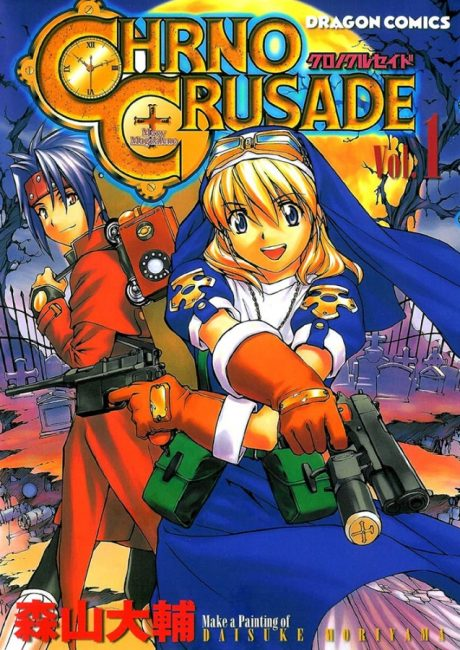

Chrono Crusade
クロノクルセイド
In 1920s New York, Rosette, a nun who hunts demons, works alongside Chrono, a demon, while searching for her missing brother.
The anime ends the story its own way, apart from the manga.
7.1AniList score
—Animeter, no votes yet
24episodes
Rate it or report where you stopped
Anime finished. Where does the manga pick up?
StatusOwn ending
The anime follows the manga only loosely, splits around episode 7, and has its own much darker ending. The manga has a different, more hopeful ending, so read it from chapter 1 if you want the original story.
More like Chrono Crusade
 Done7.7
Done7.7
 Unclear7.2
Unclear7.2
 Manga Ch. 1018.7
Manga Ch. 1018.7
 Unclear7.7
Unclear7.7
 Manga Ch. 1588.2
Manga Ch. 1588.2
 Manga Ch. 1217.2
Manga Ch. 1217.2
 Manga Ch. 538.3
Manga Ch. 538.3
 Manga Ch. 1217.5
Manga Ch. 1217.5
 Manga Ch. ?7.4
Manga Ch. ?7.4
 Own end8.1
Own end8.1
 Done8.3
Done8.3
 Manga Ch. 1818.4
Manga Ch. 1818.4